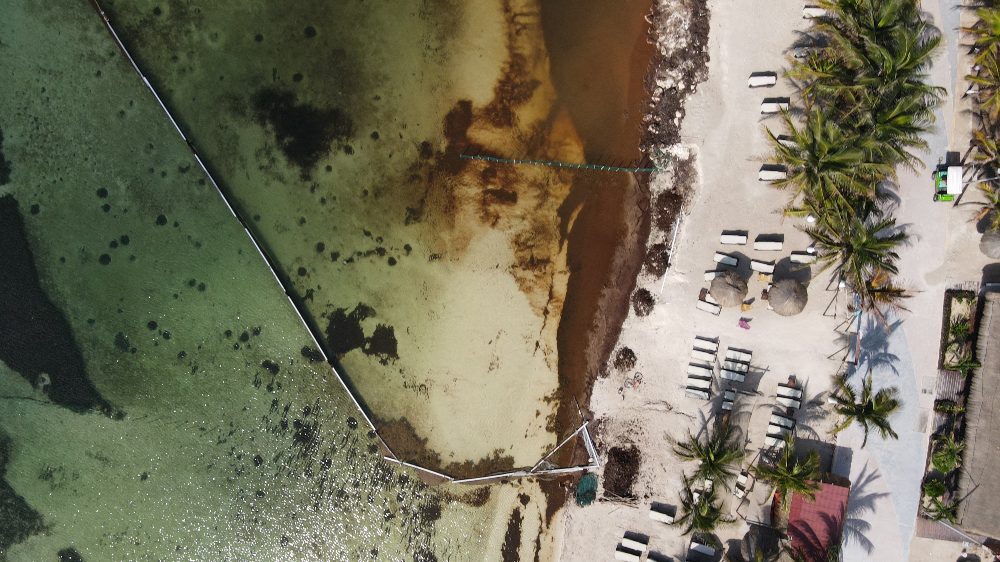
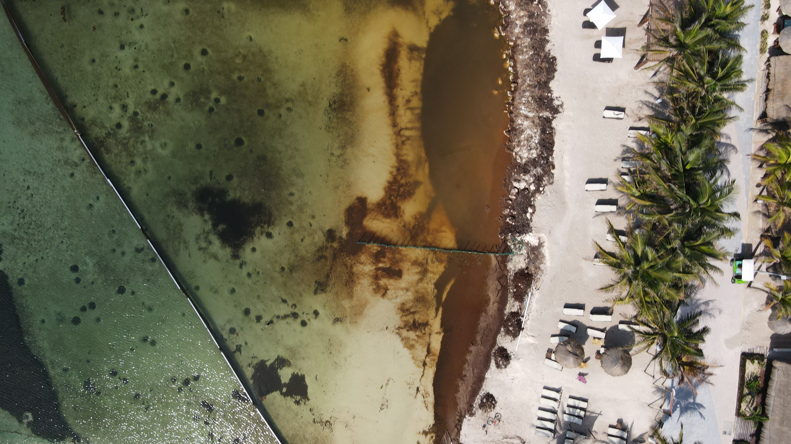
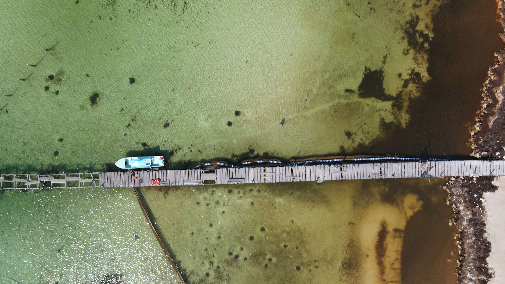
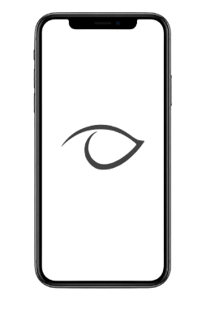

Collective View es un proyecto desarrollado por investigadores de El Colegio de la Frontera Sur (ECOSUR), con el objetivo de promover acciones con base científica y tecnológica, que contribuyan al monitoreo del sargazo en las playas del Caribe mexicano. Collective view promueve el uso de la ciencia ciudadana como metodología para la captura de información, ciencias de la computación para el análisis de los resultados y sistemas de información geográfica para la visualización de los mismos. Los productos de la investigación generada se difunde de manera escrita a través de la publicación de artículos científicos, de divulgación y difusión de la ciencia; de manera audiovisual con videos didácticos en redes sociales y mediante la liberación de los conjuntos de datos utilizados en la investigación. Esta página electrónica es un acceso al acervo de productos desarrollados en el marco del proyecto Collective View, los cuales están a disposición de la sociedad en general.
El sargazo pelágico está formado por macroalgas pardas S. fluitans y S. natans, y constituye ecosistemas flotantes que sirven como hábitats y criaderos para especies marinas importantes como tortugas marinas, peces, invertebrados y micro y macroepífitas.

Collective View funciona gracias a las fotografías que voluntarios toman durante su visita a las playas del mar Caribe.
Ciencias de la computación para el procesamiento y análisis de los resultados obtenidos.
Sistemas de información geográfica para la visualización espacial del fenómeno.
En esta sección encontrará las publicaciones realizadas por los investigadores del proyecto Collective View, que abordan su labor en el monitoreo del sargazo en las costas de Quintana Roo.
Ver publicaciones →En esta sección encontrará los conjuntos de datos utilizados para el monitoreo y detección del sargazo, con el objetivo de poner a disposición de todo público los datos recopilados para que sean utilizados en otros proyectos o trabajos.
Descargar datos →En esta sección podrá encontrar las referencias bibliográficas consultadas en las publicaciones del proyecto Collective View.
Ver referencias →En esta sección encontrará el seguimiento de gases asociados a la descomposición del sargazo en las costas del Caribe mexicano.
Ver monitoreo →En esta sección podrá encontrar videos informativos sobre Collective View, así como acceder a la aplicación web, donde puede contribuir con sus fotografías para apoyar el proyecto.
Ver videos →Sección en la que encontrará los certificados del proyecto, registradas ante el INDAUTOR México, en el que se incluyen los registros de obra de tipo software, base de datos y contenido audiovisual.
Ver certificados →Sección donde puede encontrar información sobre nosotros en otros medios, tales como distinciones, podcasts, prensa y conferencias.
Ver cobertura →Ya sea como invitado o registrándose, el voluntario puede tomar las fotografías en los días que va a la playa. Este acervo de imágenes sirve para la creación de conjuntos de datos cada vez más robustos, que pueden utilizarse para el entrenamiento de algoritmos.
Si quiere saber más y utilizar Collective View, puede acceder a la aplicación web desde tu dispositivo móvil.

Si desea contactar a alguno de los investigadores, puede encontrar su información de contacto en esta sección.
© 2024 Collective View - Proyecto de investigación ECOSUR